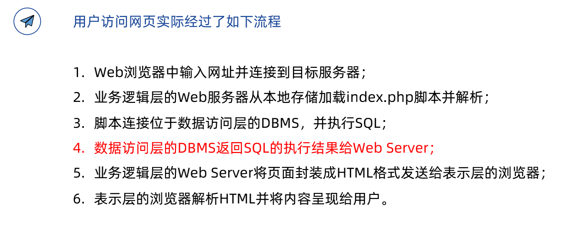

Web网络安全 - 极客时间
极客时间的 web网络安全攻防实战 课程记录
web 安全的根本性原因是 前端输入不可信
常用的工具
- Burp-Suite: Burp Suite Professional is one of the most popular penetration testing and vulnerability finder tools
- cURL: 系统自带
- Postman: GUI式cURL
- Wappalyzer: 网站技术栈分析
- HackBar: web安全工具插件
Web 后端安全
文件上传漏洞
举个例子，后端服务器若为 PHP，那么可以上传一个 shell.php 文件，里面包含
1 | # shell.php |
一旦文件上传成功，即可把下面的命令加入 post 请求体
1 | # 任意 Post 请求的请求体 |
工具：
- 可以用
中国菜刀，一个 win 平台的工具 - 使用
Docker运行 bWAPP 平台练习
初阶：后缀名绕过
1 | # 修改 shellp.php 的名字 |
1 | # 如何探究其原因 |
中阶：3种
前端验证绕过
很多 CMS(content management system) 都只在前端用 js 来做校验
漏洞利用流程
- 通过 Burp Suite 抓包，修改内容后放行
常见 - 通过 Chrome 禁止or删除 js 代码
- 通过 Burp Suite 抓包，修改内容后放行
.htaccess绕过- 前提：web server 支持
.htaccess分布式配置文件 - 原理：使用此文件绕过
黑名单过滤 - 例子：比如黑名单限制上传
php文件，但是上传jpg文件，利用.htaccess告诉目前文件夹可以去解析某一类文件。 - 用
php解析jpg
- 前提：web server 支持
1 | 白名单过滤：不能使用，因为 .htaccess 无法上传 |
大小写绕过
- Windows: 大小写
不敏感 - Linux: 大小写
敏感
- Windows: 大小写
高阶：3种
文件流绕过，针对 windows 文件流字符串截断，当拼接目录时文件头检测，(绕过白名单，需要检测文件内容时，注意不要有乱码)
SQL 注入漏洞
是发生于 应用程序与数据库 的安全漏洞
实际情况中，需要结合用户的输入动态构造SQL语句，导致此时有SQL注入风险
提交网页时，主要分 GET方法，POST方法
Web 应用三层架构
界面层 + 业务逻辑层 + 数据访问层
1 | 具体案例 |